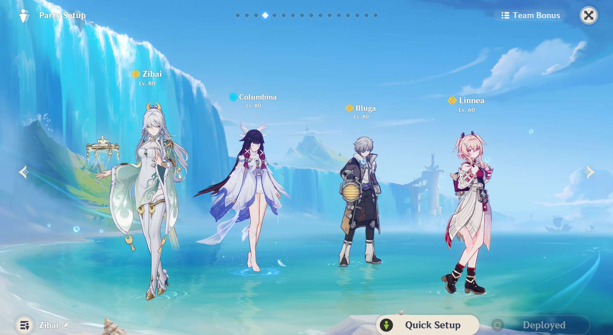
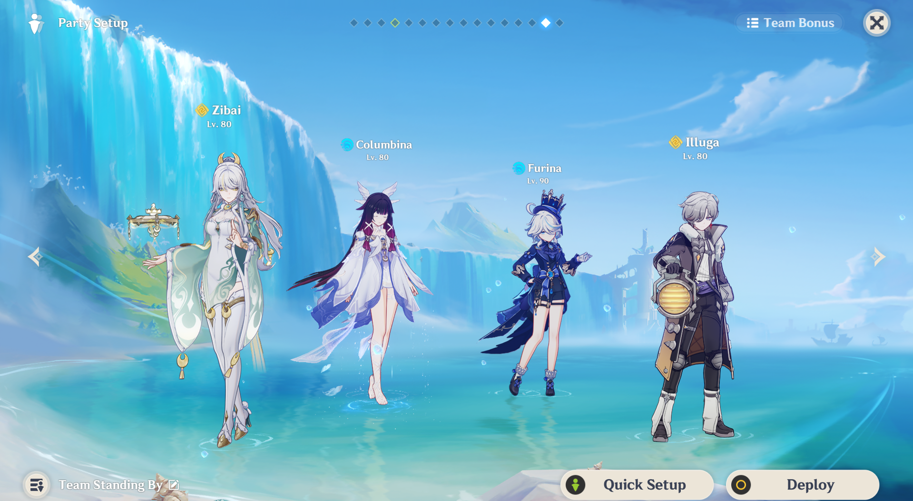

Zibai's Team

Lunar-crystalize is a new elemental reaction added in version 6.5 along with lunar-bloom and lunar-charged. To trigger this reaction you have to have to have a character that can trigger any lunar reation, such as aino (ftp) and columbina (wish), and any geo character. To maximize your DMG, you have to use Zibai as she is the only lunar-DMG dealing geo character out as of now. Once you have those two characters, you need two more supports. You can use geo buffers, but any other support will have zero effect on the team since lunar-crystalize works differently than other reactions which is why I do not recommend any ATK boosters. You also need constant geo and hydro application to boost Zibai's skill. You can use the FTP characters, Illuga and Aino to give elemental application.

Zibai's Premium Team:
- Zibai
- Columbina
- Illuga
- Linnea
F2P Team:
Genshin Impact has become more of pay to win game a lot recently so if you don't have enough primogems for this team, there are still free-to-play options for you. As long as you have one lunar-hydro applicator and a team full of geo, you should be good. Remember, you cannot create lunar-crystalize without Columbina or Aino. You get Aino for free in the story quest so if you haven't done it yet, you should probably find the time to do so. You can also reuse some of your geo supports from the past! Gorou can replace linnea if you haven't gotten her yet, but beware, you still need a healer. If you have Kokomi or Furia, you can have them as the second support. Only use Furia for healing though, her ATK boost will not help the team whatsoever.
- Zibai
- Columbina/Aino
- Furina/Kokomi
- Linnea/Gorou
More information about Zibai's teams can be found below:
Zibai Teams